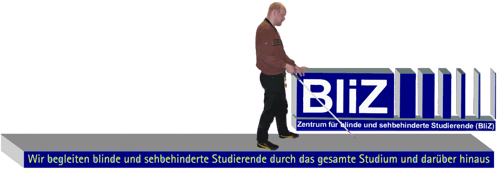
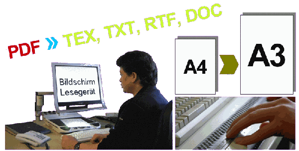

Barrieren mit uns minimieren
Die Technische Hochschule Mittelhessen bietet ein breites Angebot, um Studieninteressierten eine hochqualifizierte Ausbildung zu ermöglichen. Damit behinderte und chronisch kranke Studierende dieses Angebot wahrnehmen können, müssen einige Hindernisse überwunden werden. Unser Leitbild ist es, diese Barrieren gemeinsam mit unseren Studierenden zu minimieren und einen bestmöglichen Studienablauf zu ermöglichen.
Studieneinstieg
Der Start in das Hochschulleben ist für ein erfolgreiches Studium von besonderer Bedeutung. (Daher zählt ein reibungsfreier Einstieg in das Studium zu unseren wichtigsten Aufgaben.) Für einen reibungsfreien Einstieg in das Studium bieten wir folgende Hilfestellungen:
Informations- und Orientierungstage: In regelmäßigen Abständen erhalten zukünftige Studierende die Gelegenheit, sich über das Studium und unser Leistungsangebot zu informieren oder im Rahmen eines „Schnupperstudiums“ an Vorlesungen teilzunehmen.
Beratungsgespräche: Einzelgespräche sind "unter Kontakt" jederzeit möglich.
Mobilitätstraining: Orientierungshilfe auf dem Gelände der THM kann von uns gegeben werden. Für weitergehende Hilfen müssen externe Mobilitätstrainer herangezogen werden.
Zimmervermittlung: Auch bei der Suche nach einer Unterkunft können wir behilflich sein.
Studium
Unser Ziel ist der Nachteilsausgleich für behinderte und chronisch kranke Studierende in ihrer Hochschulausbildung. Darunter ist weniger der studieninhaltliche Aspekt als die Verringerung behinderungsspezifischer Barrieren zu verstehen. Dafür stellen wir die Räume, die Nutzung unseres Intranets und vielfältige Reha-Hilfsmittel (Bildschirmlesegeräte, Großbildschirme am Schwenkarm, Sprachausgabe und Vergrößerungssoftware), sowie unsere Dienstleistungen zur Verfügung. Eine umfangreiche Bibliothek in gedruckter und elektronischer Form ergänzt unser Angebot.
Mentorenprogramm: Die Studierenden erhalten von unseren erfahrenen Mitarbeitern und Studierenden höheren Semesters praktische Tipps zum Studium.
Individuelle Betreuung (Coaching): Um individuelle Probleme effektiv zu lösen, stehen unsere Mitarbeiter den Studierenden mit Rat und Tat zur Seite.
Bedarfsgerechte Literaturumsetzung: Viele der Lehrmaterialien sind für sehgeschädigte Studierende mit ihren Hilfsmitteln unbrauchbar, oder stehen in elektronischer Form nicht zur Verfügung. Wir bereiten diese auf, so dass sie jedem zugänglich sind.
Durchführung behinderungsgerechter Klausuren / Leistungsnachweise: Nach Absprache mit den Dozenten können Leistungsnachweise in unseren Räumen mit Hilfsmitteln erbracht werden, die behinderungsbedingte Nachteile ausgleichen.
Ergänzende Lehrveranstaltungen für Sehgeschädigte: Es werden z. B. LaTeX-Kurse angeboten. LaTeX ist ein Satzsystem zur Erstellung von Schriftstücken. Wir verwenden dieses zur Darstellung und Bearbeitung von mathematischen Ausdrücken.
Sozialraum: Ergänzend zu den Arbeitsräumen steht dieser Raum unseren Studierenden und Mitarbeitern während ihrer Pausen zur Verfügung.
Projekte und Forschung im Bereich Sehschädigung: Wir führen mit unserem Fachwissen in Kooperation mit Industriepartnern, Hochschulen und Uni-Kliniken Projekte durch, die sehgeschädigten Menschen das Leben zukünftig erleichtern.
Projektsemester (Praktikum)
Praxisorientiertes Lernen ist das Lehrkonzept der Technischen Hochschule Mittelhessen. Dafür ist ein Projektsemester im Hauptstudium vorgesehen, dass aus einem praktischem Teil und der Bachelor-Arbeit besteht. Hier können die Studierenden ihre bis dahin erworbenen theoretischen Kenntnisse in der Praxis einsetzen.
Kontaktvermittlung: Praktika müssen von den Studierenden im Allgemeinen selbst organisiert werden. Auf Anfrage können wir natürlich auch behilflich sein.
Arbeitsplatzbereitstellung (Beratung): Sehgeschädigte Studierende benötigen eine behinderungsspezifische Arbeitsplatzausstattung. Hier stellen wir unser "Know-How“ zur Verfügung und beraten die zukünftige Praktikumsstelle. Für den Praktikumszeitraum können wir ggf. Reha-Hilfsmittel bereitstellen.
Betreuung am Praktikumsplatz: Während des Praktikums stehen wir in engem Kontakt mit den Praktikanten und ihren Betreuern im Betrieb.
Bachelor-Arbeit: Hier sind wir unseren Studierenden ggf. beim Layout der Arbeit behilflich.
Leistungsnachweise
Bedingt durch ihre Sehschwäche können unsere Studierenden die Leistungsnachweise (Klausuren etc.) ohne ihre Hilfsmittel nur mit erheblichen Schwierigkeiten erbringen.
Ausgleich behinderungsbedingter Nachteile bei Leistungsnachweisen: Wir stellen z. B. Bildschirmlesegeräte, PCs mit Großbildschirmen, Sprachausgaben, Vergrößerungssoftware und Braillezeilen zur Verfügung. Damit können schon einige Nachteile ausgeglichen werden.
Behinderungsgerechte Aufbereitung von Klausurstellungen: Oft muss eine Klausurstellung in ein anderes Format umgewandelt werden, damit es von den Studierenden mit ihren Hilfsmitteln bearbeitet werden kann. Die vertrauliche Behandlung und zeitgleiche Durchführung der Klausuren ist selbstverständlich.
Hilfen beim Layout von wissenschaftlichen Ausarbeitungen: Das Layout ist ein wesentlicher Bestandteil einer wissenschaftlichen Arbeit oder Präsentation. Wir helfen unseren Studierenden bei der Erstellung des Layouts nach ihren Vorstellungen und Ideen.
Information und Beratung der Dozenten: Für offene Fragen und Anregungen stehen wir den Dozenten und anderen Interessenten nach Absprache gerne zur Verfügung.
Integration in das Arbeitsleben
Berührungsängste und unzutreffende Vorurteile der Arbeitgeberseite sowie die schwierige Lage auf dem Arbeitsmarkt erfordern es, dass sich chronisch kranke und behinderte Hochschulabsolventen noch besser auf den Berufseinstieg vorbereiten müssen. Wir setzen uns für unsere Studierenden auch nach ihrem Studienabschluss ein.
Persönliche Beratung: Erfahrungen unserer Mitarbeiter und Absolventen über ihren eigenen Berufseinstieg können für unsere Abgänger hilfreich sein.
Kontakte mit der Arbeitsagentur/JobCenter: Wir arbeiten eng mit den lokalen Agenturen für Arbeit zusammen, um für unsere Absolventen eine möglichst gute Startposition in das Arbeitsleben zu ermöglichen.
Kontakte mit potentiellen Arbeitgebern: Auf verschiedenen Wegen sprechen wir regionale Arbeitgeber an, die im Rahmen von Praktika oder Bachelorarbeiten sehgeschädigte Studierende kennen lernen können, damit eventuelle Vorbehalte diesen gegenüber ausgeräumt werden.
Wir unterstützen chronisch kranke und behinderte Menschen, indem wir durch unsere Arbeit die Barrieren im Studium soweit wie möglich minimieren. Vom Studieneinstieg über die Betreuung am Praktikumsplatz bis hin zur Eingliederung in das Arbeitsleben stehen wir den Studierenden zur Seite. Darauf können sich unsere Studierenden auch in Zukunft verlassen.